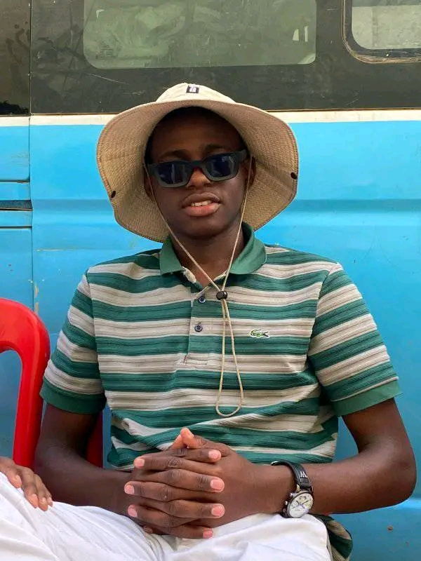
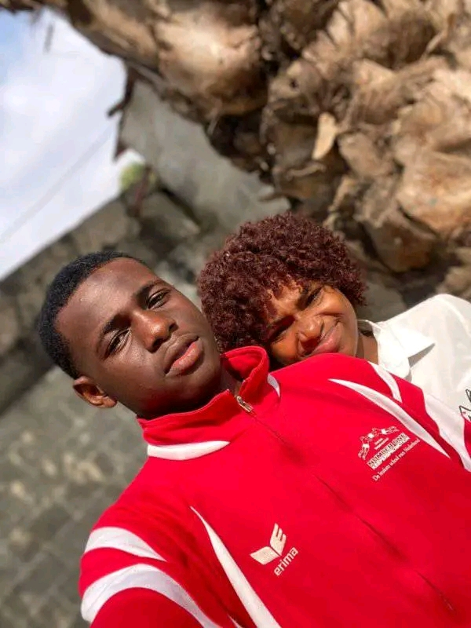
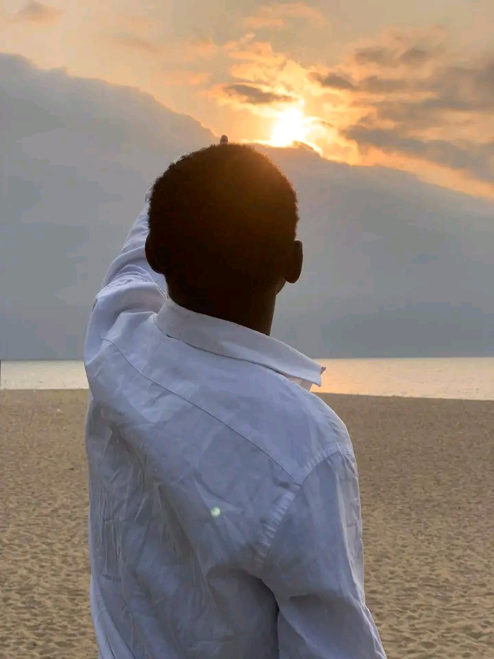

Este site é uma forma de agradecer a um colega muito especial, que sempre se preocupa com todos, busca manter os amigos unidos, organiza encontros e faz de tudo para espalhar alegria. Poucos dão o devido valor, mas aqui fica registrado: sua amizade é única e verdadeira.
Há pessoas que carregam dentro de si uma luz rara, e um desses tesouros é o meu amigo. Ele não se contenta em apenas estar presente; ele busca unir, aproximar e criar pontes entre todos.Seja numa chamada, num grupo ou num simples debate, ele tem o dom de transformar encontros em momentos de partilha, amizade e reflexão.
Amizades assim são raras. Que nunca falte força, alegria e união no seu caminho. Obrigado por ser essa pessoa incrível!
Sua preocupação não é apenas em falar, mas em ouvir, acolher e dar espaço para que cada voz se sinta parte do todo. Ele entende que a verdadeira força está na união, que ideias diferentes não afastam, mas engrandecem. Por isso, faz de cada conversa um lugar onde a amizade se fortalece e o respeito floresce.
Ter um amigo assim é ter ao lado alguém que não constrói muros, mas abre portas. É saber que sempre haverá um coração disposto a unir, um sorriso capaz de acalmar e uma palavra que inspira confiança.
Esse amigo é a prova de que a amizade é, antes de tudo, uma ponte que se constrói com cuidado, dedicação e amor.